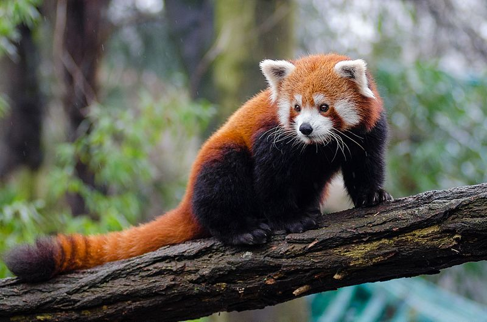
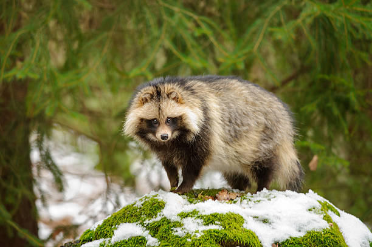

Red Pandas, who usually live in the mountains of central China, are an endangered species, with only about 10,000 left in the wild.

The Japanese Raccoon Dog, also called "tanuki", are the only canines that hibernate.

The Wombat, an animal with great digging abilities, can crush a predator's skulls with their behinds.